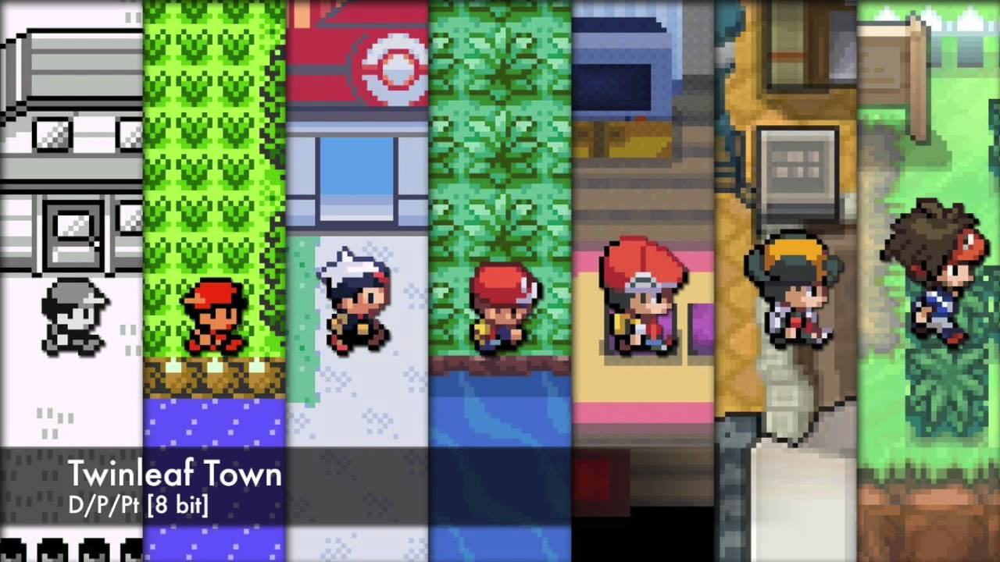
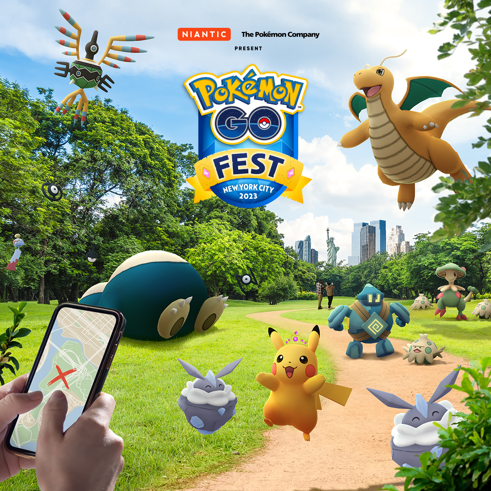

There are a lot of games associated with the Pokémon franchise, starting with games on the Gameboy to games on our iPhone 14. There's also a huge range of game types, the most popular being Role Playing Games. Overall, there are 122 known official Pokémon games out in existence. The games can be grouped into nine generations. The defining point of whre a new generation begins is when a new core series Pokémon game is released with a large set of new Pokémon in its Pokedex.
Again, these are the most popular or well-known Pokémon games. The way these work is you play as a trainer starting their journey, and are asked to select a beginning Pokémon from the game Professor. Depending on the generation, the starter Pokémon, professor, location, and your character are different, but it still follows the same base format. After receiving your starter Pokémon, you are then tasked with beating the Pokémon League, which includes going to each city with a Pokémon Gym, beating the respective Pokémon Gym Leader, and receving a badge. After receving all 8 badges for the region, you can then compete in the Pokémon League, to fight more advanced opponents and eventually to challenge the current Pokémon Champion.
Throughout the adventure, you catch different Pokémon for your team and level up the ones in your team to prepare to fight gym leaders. The gym leaders get increasingly difficult as you advance, with higher levels and stronger moves. There's a lot of side quests that allow you to gain items, and a lot of places to explore. There's a natural progression throughout the game that pushes you towards the final destination of the Pokémon League.
In some of the games, there are also competitions called Pokémon Contests, where the Pokêmon puts on a performance, based on a show using moves and also a show using aesthetic and Pokémon style. However, these have no real effect on the main storyline.
The following main RPG games are listed down below. Each game has two box legendaries associated with the game, who are part of the storyline, usually outside of participating in the Pokémon League. Disclaimer: These are the games I enjoy playing or have played, and I might be missing a few. But this website is about me! So I don't actually care.
All of these games have their own respective champions, gyms, town names and storylines. There are different elements in each game, setting them slightly apart from one another. The most recent games have moved away from the 8-bit look while adding a more free strucutre to the game.
"Other Pokémon Games" is a very broad title, but there are tons of different Pokémon games outside of the RPG format. These games are super different from each other and all utilize Pokémon and the Pokémon universe. I will be listing them down below. Disclaimer: These are not all the games, but these are the ones that matter to me. Again, my website!
These games range anywhere from having its own storyline with Pokémon rescue teams, exploring Pokémon in a new place, fighting against one another, an augmented reality game, anything really. The one I want to discuss more in detail is Pokémon Legends: Arceus, which was one of the first games to break free from the structure of regular Pokémon RPG games and to introduce a totally free and open world. You can go to any region besides one and explore and encounter different Pokémon at varying levels.
